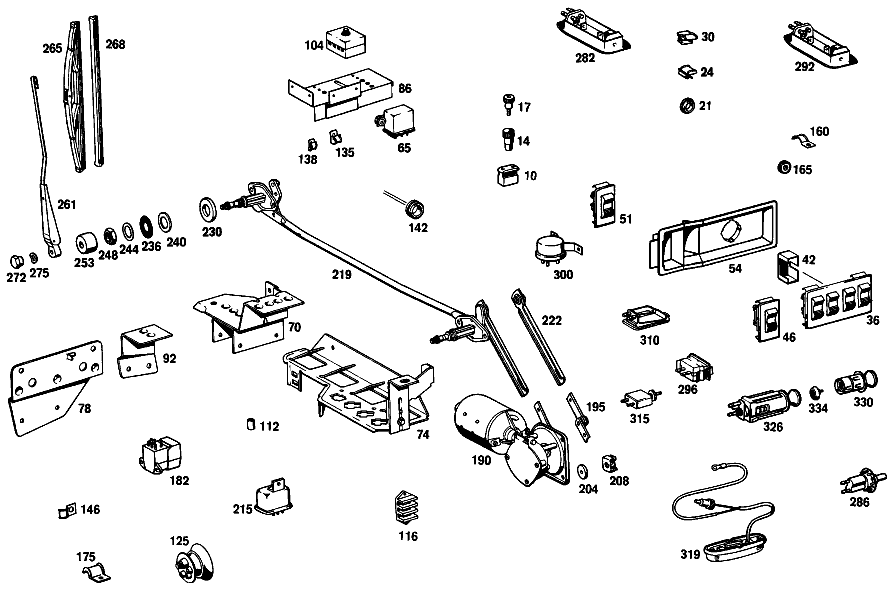

| № | Артикул | Название | Кол. | Примечание | Ограничение |
|---|---|---|---|---|---|
| 10 | A 002 545 49 28 | ШТЕКЕР | - | ||
| 10 | A 008 545 37 28 | Сцепление, механическое | 3 | ДВУХПОЛЮСНЫЙ; 2\-PIN [001] 015 UP TO CHASSIS 002113 | |
| 10 | A 008 545 37 28 | Сцепление, механическое | 5 | 2\-PIN [002] 015 FROM CHASSIS 002114 | |
| 14 | A 000 545 47 28 | Сцепление, механическое | - | ||
| 14 | A 004 545 85 28 | ШТЕКЕР | - | ||
| 14 | A 008 545 20 28 | Нижняя часть корпуса | 1 | 1\-PIN; 1\-PIN [001] 015 UP TO CHASSIS 002113 | |
| 14 | A 008 545 20 28 | Нижняя часть корпуса | 2 | 1\-PIN; 1\-PIN [002] 015 FROM CHASSIS 002114 | |
| 17 | A 000 545 49 28 | ШТЕКЕР | - | ||
| 17 | A 004 545 84 28 | ШТЕКЕР | - | ||
| 17 | A 126 540 10 81 | Штекер | 1 | 1\-PIN | |
| 21 | A 000 997 22 81 | Проходная втулка | 1 | [001] 015 UP TO CHASSIS 002113 | |
| 24 | A 002 988 38 78 | Скоба | 8 | ||
| 30 | A 094 988 15 00 | Скоба | 4 | [035] 018 UP TO CHASSIS 006160 | |
| 36 | A 001 821 33 51 | ВЫКЛЮЧАТЕЛЬ | 1 | 4 ШТ. [004] 015 FROM CHASSIS 002128 | |
| 36 | A 001 821 33 51 | ВЫКЛЮЧАТЕЛЬ | 1 | 4 ШТ. [021] 016 UP TO CHASSIS 001858 EXCEPT FOR,SEE FOOTNOTE 054;018 UP TO CHASSIS 002019 EXCEPT FOR 001907,001911 [054] 001473, 001548, 001702, 001722, 001786, 001793, 001797, 001801, 001804, 001853- 001857. | |
| 42 | A 109 821 00 36 | ПАНЕЛЬ | 3 | [021] 016 UP TO CHASSIS 001858 EXCEPT FOR,SEE FOOTNOTE 054;018 UP TO CHASSIS 002019 EXCEPT FOR 001907,001911 [054] 001473, 001548, 001702, 001722, 001786, 001793, 001797, 001801, 001804, 001853- 001857. | |
| 46 | A 001 821 30 51 | ВЫКЛЮЧАТЕЛЬ | 1 | [004] 015 FROM CHASSIS 002128 [021] 016 UP TO CHASSIS 001858 EXCEPT FOR,SEE FOOTNOTE 054;018 UP TO CHASSIS 002019 EXCEPT FOR 001907,001911 [054] 001473, 001548, 001702, 001722, 001786, 001793, 001797, 001801, 001804, 001853- 001857. | |
| 51 | A 001 821 31 51 | ВЫКЛЮЧАТЕЛЬ | 3 | 1 ШТ. [004] 015 FROM CHASSIS 002128 [021] 016 UP TO CHASSIS 001858 EXCEPT FOR,SEE FOOTNOTE 054;018 UP TO CHASSIS 002019 EXCEPT FOR 001907,001911 [054] 001473, 001548, 001702, 001722, 001786, 001793, 001797, 001801, 001804, 001853- 001857. | |
| 54 | A 109 821 01 65 | КОРПУС | 2 | НА ДВЕРИ ВОДИТЕЛЯ [003] 015 UP TO CHASSIS 002127 | |
| 65 | A 000 542 58 19 | Контактор | 1 | LATERAL AT RIGHT WHEELHOUSE | |
| 86 | A 109 540 02 73 | ДЕРЖАТЕЛЬ | 1 | НА КОЛЕС.АРКЕ СПРАВА Рулевое управление: Влево | |
| 104 | A 000 545 67 01 | БЛОК ПРЕДОХРАНИТЕЛЕЙ | - | ||
| 104 | A 000 545 71 01 | БЛОК ПРЕДОХРАНИТЕЛЕЙ | - | ||
| 104 | A 000 545 99 01 | Закр. блок предохр. | 1 | 4 ШТ. [021] 016 UP TO CHASSIS 001858 EXCEPT FOR,SEE FOOTNOTE 054;018 UP TO CHASSIS 002019 EXCEPT FOR 001907,001911 [054] 001473, 001548, 001702, 001722, 001786, 001793, 001797, 001801, 001804, 001853- 001857. | |
| 116 | A 000 546 35 41 | СОЕДИНИТЕЛЬ ПРОВОДОВ | - | [409] ПРИ МОНТАЖЕ ПОДОГНАТЬ ПО МЕСТУ | |
| 116 | A 001 546 58 41 | СОЕДИНИТЕЛЬ ПРОВОДОВ | 4 | 3\-КОНТАКТ. [402] БОЛЬШЕ НЕ ПОСТАВЛЯЕТСЯ [021] 016 UP TO CHASSIS 001858 EXCEPT FOR,SEE FOOTNOTE 054;018 UP TO CHASSIS 002019 EXCEPT FOR 001907,001911 [054] 001473, 001548, 001702, 001722, 001786, 001793, 001797, 001801, 001804, 001853- 001857. | |
| 125 | A 111 997 23 81 | КАБ. ВТУЛКА | - | Рулевое управление: Влево | |
| 125 | A 008 997 17 81 | втулка | 1 | Рулевое управление: Влево | |
| 135 | A 000 988 53 78 | СКОБА | 1 | [021] 016 UP TO CHASSIS 001858 EXCEPT FOR,SEE FOOTNOTE 054;018 UP TO CHASSIS 002019 EXCEPT FOR 001907,001911 [054] 001473, 001548, 001702, 001722, 001786, 001793, 001797, 001801, 001804, 001853- 001857. | |
| 138 | A 000 988 33 78 | Скоба | 1 | [021] 016 UP TO CHASSIS 001858 EXCEPT FOR,SEE FOOTNOTE 054;018 UP TO CHASSIS 002019 EXCEPT FOR 001907,001911 [054] 001473, 001548, 001702, 001722, 001786, 001793, 001797, 001801, 001804, 001853- 001857. | |
| 142 | A 100 997 08 81 | Проходная втулка | 2 | ||
| 146 | A 000 995 76 01 | хомут | 1 | ЖГУТ ЭЛ.ПРОВОДКИ НА ДВЕРИ ВОДИТЕЛЯ [021] 016 UP TO CHASSIS 001858 EXCEPT FOR,SEE FOOTNOTE 054;018 UP TO CHASSIS 002019 EXCEPT FOR 001907,001911 [054] 001473, 001548, 001702, 001722, 001786, 001793, 001797, 001801, 001804, 001853- 001857. | |
| 160 | A 000 995 76 01 | хомут | 8 | [007] 015 UP TO CHASSIS 002024 | |
| 160 | A 000 995 76 01 | хомут | 2 | [008] 015 FROM CHASSIS 002025 | |
| 165 | A 000 997 27 81 | Проходная втулка | 2 | ||
| 175 | A 136 995 01 35 | хомут | 3 | [021] 016 UP TO CHASSIS 001858 EXCEPT FOR,SEE FOOTNOTE 054;018 UP TO CHASSIS 002019 EXCEPT FOR 001907,001911 [054] 001473, 001548, 001702, 001722, 001786, 001793, 001797, 001801, 001804, 001853- 001857. | |
| 182 | A 108 821 00 51 | ВЫКЛЮЧАТЕЛЬ | - | Рулевое управление: Вправо | |
| 182 | A 108 821 07 51 | Переключатель | 1 | Рулевое управление: Вправо | |
| 190 | A 115 820 16 42 | ЭЛЕКТРОМОТОР | 1 | [022] 016 FROM CHASSIS 001859 ALSO INSTALLED ON,SEE FOOTNOTE 054;018 FROM CHASSIS 002020 ALSO INSTALLED ON 001907,001911 [054] 001473, 001548, 001702, 001722, 001786, 001793, 001797, 001801, 001804, 001853- 001857. [012] 015 FROM CHASSIS 002131 | |
| 195 | A 108 824 00 10 | - Кривошип | 1 | [021] 016 UP TO CHASSIS 001858 EXCEPT FOR,SEE FOOTNOTE 054;018 UP TO CHASSIS 002019 EXCEPT FOR 001907,001911 [054] 001473, 001548, 001702, 001722, 001786, 001793, 001797, 001801, 001804, 001853- 001857. | |
| 204 | A 000 987 38 41 | КОЛЬЦО РЕЗИНОВОЕ | 3 | ||
| 208 | A 000 990 27 91 | ГАЙКОДЕРЖАТЕЛЬ | - | ||
| 208 | A 000 990 22 91 | ГАЙКОДЕРЖАТЕЛЬ | - | ||
| 208 | A 001 990 67 91 | Гайкодержатель | 3 | [415] ПРИМЕЧ. ПО ЗАМЕНЕ ПРИМЕНИМО ТОЛЬКО ДЛЯ СТОЯЩИХ РЯДОМ ПОЗИЦИЙ [011] 015 UP TO CHASSIS 002130 | |
| 215 | A 000 542 61 19 | РЕЛЕ | 1 | STRIEBEL [011] 015 UP TO CHASSIS 002130 | |
| 219 | A 108 820 00 43 | ТЯГИ | - | ||
| 219 | A 108 820 02 43 | Тяга | 1 | ||
| 222 | A 000 824 08 06 | - ТЯГА | 1 | [021] 016 UP TO CHASSIS 001858 EXCEPT FOR,SEE FOOTNOTE 054;018 UP TO CHASSIS 002019 EXCEPT FOR 001907,001911 [054] 001473, 001548, 001702, 001722, 001786, 001793, 001797, 001801, 001804, 001853- 001857. | |
| 230 | A 108 824 03 97 | Дистанционная шайба | 2 | ||
| 236 | A 000 987 07 41 | КОЛЬЦО РЕЗИНОВОЕ | 2 | ||
| 240 | A 001 990 11 40 | ШАЙБА | 2 | ||
| 244 | A 000 824 22 82 | Диск | 2 | ||
| 248 | A 002 990 26 51 | гайка | 2 | [013] 015 UP TO CHASSIS 002067 | |
| 253 | A 111 824 01 72 | ГАЙКА | - | ||
| 253 | A 110 824 04 72 | Капсула | 2 | [402] БОЛЬШЕ НЕ ПОСТАВЛЯЕТСЯ [014] 015 FROM CHASSIS 002068 | |
| 261 | A 108 820 03 44 | РЫЧАГ СТЕКЛООЧИСТИТЕЛЯ | - | [014] 015 FROM CHASSIS 002068 [044] 018 UP TO CHASSIS 005647;056 UP TO CHASSIS 005910 | |
| 261 | A 108 820 05 44 | Поводок стеклоочистителя | 1 | СЛЕВА [014] 015 FROM CHASSIS 002068 | |
| 265 | A 115 820 00 45 | ЩЕТКА СТЕКЛООЧИСТИТЕЛЯ | 2 | [014] 015 FROM CHASSIS 002068 | |
| 268 | A 000 824 07 27 | - Резин. элемент щетки | 2 | [014] 015 FROM CHASSIS 002068 | |
| 272 | A 000 990 12 53 | гайка | 2 | [014] 015 FROM CHASSIS 002068 [044] 018 UP TO CHASSIS 005647;056 UP TO CHASSIS 005910 | |
| 275 | A 000 990 17 48 | Диск | 2 | ||
| 282 | A 108 820 03 52 | Лампа для чтения | 1 | [002] 015 FROM CHASSIS 002114 | |
| 286 | A 000 821 04 52 | ВЫКЛЮЧАТЕЛЬ КОНТАКТНЫЙ | - | ||
| 292 | A 108 820 04 52 | ЛАМПА ДЛЯ ЧТЕНИЯ | - | ||
| 292 | A 108 820 03 52 | Лампа для чтения | 1 | [002] 015 FROM CHASSIS 002114 | |
| 296 | A 001 821 02 51 | Переключатель | 1 | ||
| 300 | A 002 821 01 51 | Переключатель | 1 | ||
| 310 | A 123 820 01 01 | ПЛАФОН ОСВЕЩЕНИЯ САЛОНА | - | ||
| 310 | A 126 820 13 01 | Плафон освещения салона | 1 | [018] 015,10/50,12/52 FROM CHASSIS 002204;015,20/60,22/62 FROM CHASSIS 002262 | |
| 315 | A 000 821 08 52 | ВЫКЛЮЧАТЕЛЬ КОНТАКТНЫЙ | 1 | [402] БОЛЬШЕ НЕ ПОСТАВЛЯЕТСЯ [018] 015,10/50,12/52 FROM CHASSIS 002204;015,20/60,22/62 FROM CHASSIS 002262 | |
| 319 | A 108 825 01 42 | ПЛАФОН ПОРОГА | 1 | ||
| 322 | A 110 825 00 41 | ПЛАФОН ОСВЕЩЕНИЯ САЛОНА | 1 | ||
| 326 | A 110 825 03 53 | ПРИКУРИВАТЕЛЬ | - | ||
| 330 | A 110 825 03 51 | - ВСТАВКА | - | ||
| 334 | A 000 825 02 52 | - Прикуриватель | 1 | ||
| 340 | A 108 820 00 61 | БЛОК-ФАРА | 2 | [023] 016 UP TO CHASSIS 001053 | |
| 344 | A 000 826 01 78 | - ОТРАЖАТЕЛЬ | 2 | ||
| 347 | A 000 826 00 94 | - втулка | 8 | ||
| 350 | A 000 826 01 39 | - Крепежные детали | 4 | ||
| 355 | A 000 826 03 57 | - РАССЕИВАТЕЛЬ | 2 | ||
| 358 | A 000 826 00 78 | - Отражатель | 2 | [023] 016 UP TO CHASSIS 001053 | |
| 365 | A 000 826 25 82 | - ЛАМПОВЫЙ ПАТРОН | 2 | ||
| 368 | A 100 826 01 82 | - ЛАМПОВЫЙ ПАТРОН | 2 | [023] 016 UP TO CHASSIS 001053 | |
| 376 | A 000 826 12 78 | - ОТРАЖАТЕЛЬ | 2 | [023] 016 UP TO CHASSIS 001053 | |
| 380 | A 000 826 05 80 | - УПЛОТНИТЕЛЬ | - | ||
| 380 | A 000 826 57 80 | - Уплотнение | 2 | ||
| 383 | A 108 826 01 90 | - Стекло | 2 | [023] 016 UP TO CHASSIS 001053 | |
| 388 | A 000 826 55 80 | - Уплотнительная рамка | 2 | ||
| 391 | A 111 990 01 21 | - болт | 8 | ||
| 395 | A 111 826 00 89 | Декоративное кольцо | 2 | ||
| 444 | A 111 990 00 52 | гайка | 2 | ||
| 447 | A 111 993 01 25 | Пружинная скоба | 2 | ||
| 470 | A 111 820 50 62 | ФОНАРЬ ОСВЕЩ. НОМЕР.ЗНАКА | 1 | ||
| 473 | A 111 826 55 52 | - КРЫШКА | 1 | ||
| 476 | A 111 826 50 97 | - ПОДКЛАДКА | 1 | ||
| 482 | A 002 545 86 28 | - ШТЕКЕР | 1 | ||
| 485 | A 111 997 15 81 | - резиновая втулка | 1 | ||
| 490 | A 001 988 52 78 | Скоба | 3 | ||
| 500 | A 108 820 01 64 | БЛОК ЗАДНИХ ФОНАРЕЙ | - | ||
| 508 | A 108 826 01 59 | - РАМА | 1 | СЛЕВА | |
| 512 | A 108 826 01 56 | - Рассеиватель фонаря | 1 | СЛЕВА [052] 018 UP TO CHASSIS 005928;056 UP TO CHASSIS 007414 | |
| 517 | A 108 826 01 58 | - Уплотнительная рама | 1 | СЛЕВА | |
| 526 | A 111 990 00 57 | Гайковерт | 4 | ||
| 530 | A 000 544 53 32 | ДАТЧИК | - | ||
| 530 | A 000 544 61 32 | ДАТЧИК | - | ||
| 530 | A 000 544 83 32 | ДАТЧИК | - | ||
| 530 | A 001 544 42 32 | ДАТЧИК | - | ||
| 530 | A 000 544 58 32 | ДАТЧИК | 1 | [085] ADAPT COUPLING ASSIGNMENT TO NEW TURN SIGNAL TRANSMITTER | |
| A 000 545 30 28 | ШТЕКЕР | - | [415] ПРИМЕЧ. ПО ЗАМЕНЕ ПРИМЕНИМО ТОЛЬКО ДЛЯ СТОЯЩИХ РЯДОМ ПОЗИЦИЙ | ||
| A 000 997 23 81 | Проходная втулка | - | [415] ПРИМЕЧ. ПО ЗАМЕНЕ ПРИМЕНИМО ТОЛЬКО ДЛЯ СТОЯЩИХ РЯДОМ ПОЗИЦИЙ | ||
| A 001 988 77 78 | СКОБА | - | [415] ПРИМЕЧ. ПО ЗАМЕНЕ ПРИМЕНИМО ТОЛЬКО ДЛЯ СТОЯЩИХ РЯДОМ ПОЗИЦИЙ | ||
| A 000 983 29 91 | ПАПКА | 3 | 3X120X80 MM TAIL LAMP CABLE HARNESS TO TRUNK FLOOR [404] ЗАКАЗЫВАТЬ ПОГОННЫМИ МЕТРАМИ | ||
| A 000 821 99 51 | ВЫКЛЮЧАТЕЛЬ | 1 | 4 ШТ. [003] 015 UP TO CHASSIS 002127 | ||
| A 001 821 00 51 | ВЫКЛЮЧАТЕЛЬ | 1 | [003] 015 UP TO CHASSIS 002127 | ||
| A 000 821 98 51 | ВЫКЛЮЧАТЕЛЬ | 3 | 1 ШТ. [003] 015 UP TO CHASSIS 002127 | ||
| A 001 821 51 51 | Переключатель | 2 | 1 ШТ. [022] 016 FROM CHASSIS 001859 ALSO INSTALLED ON,SEE FOOTNOTE 054;018 FROM CHASSIS 002020 ALSO INSTALLED ON 001907,001911 [054] 001473, 001548, 001702, 001722, 001786, 001793, 001797, 001801, 001804, 001853- 001857. | ||
| A 109 821 04 65 | КОРПУС | 2 | НА ДВЕРИ ВОДИТЕЛЯ [004] 015 FROM CHASSIS 002128 [022] 016 FROM CHASSIS 001859 ALSO INSTALLED ON,SEE FOOTNOTE 054;018 FROM CHASSIS 002020 ALSO INSTALLED ON 001907,001911 [054] 001473, 001548, 001702, 001722, 001786, 001793, 001797, 001801, 001804, 001853- 001857. | ||
| A 109 821 00 65 | КОРПУС | - | |||
| A 109 821 02 65 | КОРПУС | - | [415] ПРИМЕЧ. ПО ЗАМЕНЕ ПРИМЕНИМО ТОЛЬКО ДЛЯ СТОЯЩИХ РЯДОМ ПОЗИЦИЙ | ||
| A 109 821 06 65 | КОРПУС | - | |||
| A 123 821 02 65 | Корпус | 2 | НА ЗАДН. ДВЕРИ | ||
| A 108 821 00 51 | ВЫКЛЮЧАТЕЛЬ | - | Рулевое управление: Вправо | ||
| A 108 821 07 51 | Переключатель | 1 | Рулевое управление: Вправо [020] 015 FROM CHASSIS 001643 [037] 018 UP TO CHASSIS 005328 EXCEPT FOR SEE FOOTNOTE 049;056 UP TO CHASSIS 004292 EXCEPT FOR,SEE FOOTNOTE 039 [049] 005253, 005267, 005274, 005309- 005312, 005314- 005327. [039] 004073, 004136, 004176, 004189, 004192- 004194, 004201, 004203, 004205, 004207- 004209, 004213- 004217, 004219- 004226, 004229- 004291. | ||
| N 000933 006121 | Винт | - | Рулевое управление: Вправо | ||
| N 304017 006020 | Винт с 6-гранной головкой | 1 | WINDSHIELD WASHER SWITCH TO STEERING PLATE AND TO FOOTREST; M6X20 Рулевое управление: Вправо [021] 016 UP TO CHASSIS 001858 EXCEPT FOR,SEE FOOTNOTE 054;018 UP TO CHASSIS 002019 EXCEPT FOR 001907,001911 [054] 001473, 001548, 001702, 001722, 001786, 001793, 001797, 001801, 001804, 001853- 001857. [020] 015 FROM CHASSIS 001643 | ||
| A 094 990 68 10 | Пружинное кольцо | 1 | WINDSHIELD WASHER SWITCH TO STEERING PLATE AND TO FOOTREST Рулевое управление: Вправо [021] 016 UP TO CHASSIS 001858 EXCEPT FOR,SEE FOOTNOTE 054;018 UP TO CHASSIS 002019 EXCEPT FOR 001907,001911 [054] 001473, 001548, 001702, 001722, 001786, 001793, 001797, 001801, 001804, 001853- 001857. [020] 015 FROM CHASSIS 001643 | ||
| N 000125 006421 | Шайба | 1 | Рулевое управление: Вправо | ||
| N 000125 006449 | Шайба | 1 | WINDSHIELD WASHER SWITCH TO STEERING PLATE AND TO FOOTREST Рулевое управление: Вправо [021] 016 UP TO CHASSIS 001858 EXCEPT FOR,SEE FOOTNOTE 054;018 UP TO CHASSIS 002019 EXCEPT FOR 001907,001911 [054] 001473, 001548, 001702, 001722, 001786, 001793, 001797, 001801, 001804, 001853- 001857. [020] 015 FROM CHASSIS 001643 | ||
| A 000 542 59 19 | Контактор | 1 | FRONT AT RIGHT WHEELHOUSE | ||
| A 109 820 00 14 | ДЕРЖАТЕЛЬ | 1 | НА КОЛЕСНОЙ АРКЕ СЛЕВА Рулевое управление: Вправо | ||
| N 007981 004326 | Шуруп | 4 | |||
| A 000 545 56 01 | БЛОК ПРЕДОХРАНИТЕЛЕЙ | - | |||
| N 007981 004331 | Шуруп | 2 | |||
| N 007985 004125 | Винт | - | |||
| N 007985 004107 | Винт | 2 | M4X10 [005] 015,10/50,12/52 UP TO CHASSIS 002369;016 UP TO CHASSIS 000046 | ||
| N 000127 004203 | Пружинное кольцо | - | |||
| N 912004 004102 | Пружинное кольцо | 2 | [005] 015,10/50,12/52 UP TO CHASSIS 002369;016 UP TO CHASSIS 000046 | ||
| N 000934 004006 | Гайка | 2 | [005] 015,10/50,12/52 UP TO CHASSIS 002369;016 UP TO CHASSIS 000046 | ||
| N 072581 025100 | ПРЕДОХРАНИТЕЛЬ | 4 | [021] 016 UP TO CHASSIS 001858 EXCEPT FOR,SEE FOOTNOTE 054;018 UP TO CHASSIS 002019 EXCEPT FOR 001907,001911 [054] 001473, 001548, 001702, 001722, 001786, 001793, 001797, 001801, 001804, 001853- 001857. | ||
| N 007516 004107 | Саморез | 0 | |||
| N 007516 004107 | Саморез | 4 | ДВЕРЬ ВОДИТЕЛЯ | ||
| N 007516 004107 | Саморез | 4 | ЗАДНЯЯ ДВЕРЬ [007] 015 UP TO CHASSIS 002024 | ||
| A 000 990 72 97 | ЗАКЛЕПКА | - | ЗАДНЯЯ ДВЕРЬ [402] БОЛЬШЕ НЕ ПОСТАВЛЯЕТСЯ [008] 015 FROM CHASSIS 002025 | ||
| A 002 545 45 28 | ШТЕКЕР | - | |||
| A 005 545 13 28 | ШТЕКЕР | - | |||
| A 006 545 80 28 | CONTACT SUPPORT | 1 | 5\-КОНТАКТН.; 6\-PIN | ||
| A 002 545 52 28 | ШТЕКЕР | - | Рулевое управление: Влево | ||
| A 004 545 86 28 | Штекер | - | Рулевое управление: Влево | ||
| A 007 545 00 28 | КОРПУС ШТЕК. ГНЕЗДА | - | Рулевое управление: Влево | ||
| A 015 545 49 28 | КОРПУС ШТЕК. ГНЕЗДА | 1 | 3\-КОНТАКТ.; 4\-PIN Рулевое управление: Влево | ||
| A 015 545 49 28 | КОРПУС ШТЕК. ГНЕЗДА | 1 | 4\-PIN Рулевое управление: Вправо | ||
| A 110 997 12 81 | резиновая втулка | - | Рулевое управление: Влево [415] ПРИМЕЧ. ПО ЗАМЕНЕ ПРИМЕНИМО ТОЛЬКО ДЛЯ СТОЯЩИХ РЯДОМ ПОЗИЦИЙ | ||
| N 007976 004215 | Шуруп | 2 | 4.8X16 [021] 016 UP TO CHASSIS 001858 EXCEPT FOR,SEE FOOTNOTE 054;018 UP TO CHASSIS 002019 EXCEPT FOR 001907,001911 [054] 001473, 001548, 001702, 001722, 001786, 001793, 001797, 001801, 001804, 001853- 001857. | ||
| A 187 995 76 01 | ХОМУТ | - | |||
| A 000 995 77 01 | ХОМУТ | - | |||
| A 001 995 13 01 | Крепежный хомут | 1 | ЖГУТ ЭЛ.ПРОВОДКИ НА ДВЕРИ ВОДИТЕЛЯ [021] 016 UP TO CHASSIS 001858 EXCEPT FOR,SEE FOOTNOTE 054;018 UP TO CHASSIS 002019 EXCEPT FOR 001907,001911 [054] 001473, 001548, 001702, 001722, 001786, 001793, 001797, 001801, 001804, 001853- 001857. | ||
| N 000933 004067 | Винт | 2 | ЖГУТ ЭЛ.ПРОВОДКИ НА ДВЕРИ ВОДИТЕЛЯ [021] 016 UP TO CHASSIS 001858 EXCEPT FOR,SEE FOOTNOTE 054;018 UP TO CHASSIS 002019 EXCEPT FOR 001907,001911 [054] 001473, 001548, 001702, 001722, 001786, 001793, 001797, 001801, 001804, 001853- 001857. | ||
| N 000127 004203 | Пружинное кольцо | - | |||
| N 912004 004102 | Пружинное кольцо | 2 | ЖГУТ ЭЛ.ПРОВОДКИ НА ДВЕРИ ВОДИТЕЛЯ [021] 016 UP TO CHASSIS 001858 EXCEPT FOR,SEE FOOTNOTE 054;018 UP TO CHASSIS 002019 EXCEPT FOR 001907,001911 [054] 001473, 001548, 001702, 001722, 001786, 001793, 001797, 001801, 001804, 001853- 001857. | ||
| N 000934 004006 | Гайка | 2 | ЖГУТ ЭЛ.ПРОВОДКИ НА ДВЕРИ ВОДИТЕЛЯ [021] 016 UP TO CHASSIS 001858 EXCEPT FOR,SEE FOOTNOTE 054;018 UP TO CHASSIS 002019 EXCEPT FOR 001907,001911 [054] 001473, 001548, 001702, 001722, 001786, 001793, 001797, 001801, 001804, 001853- 001857. | ||
| N 000085 004127 | Винт | 8 | |||
| N 000127 004203 | Пружинное кольцо | - | |||
| N 912004 004102 | Пружинное кольцо | 8 | |||
| A 000 995 74 01 | хомут | 12 | [007] 015 UP TO CHASSIS 002024 | ||
| A 000 995 75 01 | ХОМУТ | - | |||
| N 007985 004125 | Винт | - | |||
| N 007985 004107 | Винт | 20 | M4X10 [007] 015 UP TO CHASSIS 002024 | ||
| N 007985 004107 | Винт | 2 | M4X10 [008] 015 FROM CHASSIS 002025 | ||
| N 000934 004006 | Гайка | 20 | [007] 015 UP TO CHASSIS 002024 | ||
| N 000934 004006 | Гайка | 2 | [008] 015 FROM CHASSIS 002025 | ||
| N 000127 004203 | Пружинное кольцо | - | |||
| N 912004 004102 | Пружинное кольцо | 20 | [007] 015 UP TO CHASSIS 002024 | ||
| N 912004 004102 | Пружинное кольцо | 2 | [008] 015 FROM CHASSIS 002025 | ||
| A 002 988 02 78 | Скоба | 10 | [008] 015 FROM CHASSIS 002025 | ||
| A 000 988 18 78 | Скоба | 4 | [008] 015 FROM CHASSIS 002025 | ||
| A 000 997 28 81 | Проходная втулка | 2 | [008] 015 FROM CHASSIS 002025 | ||
| A 000 988 53 78 | СКОБА | - | [415] ПРИМЕЧ. ПО ЗАМЕНЕ ПРИМЕНИМО ТОЛЬКО ДЛЯ СТОЯЩИХ РЯДОМ ПОЗИЦИЙ | ||
| A 114 997 04 90 | связующее вещество | - | |||
| A 114 997 02 90 | связующее вещество | - | |||
| A 114 997 05 90 | связующее вещество | 2 | AT FRONT PANEL PILLAR INTERIOR PLATE; 9X210 MM [010] 015 FROM CHASSIS 000247 ALSO INSTALLED ON 000194,000222,000225,000238,000240-000245 | ||
| A 001 997 12 90 | СОЕДИНИТЕЛЬНЫЙ ЭЛЕМЕНТ | - | |||
| A 001 997 42 90 | связующее вещество | - | |||
| A 001 997 43 90 | Кабельная стяжка | 1 | AT FRONT PANEL PILLAR INTERIOR PLATE 140mm; 9X250 MM [010] 015 FROM CHASSIS 000247 ALSO INSTALLED ON 000194,000222,000225,000238,000240-000245 | ||
| N 040621 018200 | Изоляционный шланг | 0 | [404] ЗАКАЗЫВАТЬ ПОГОННЫМИ МЕТРАМИ | ||
| N 040621 018200 | Изоляционный шланг | 2 | ДВЕРЬ ВОДИТЕЛЯ [404] ЗАКАЗЫВАТЬ ПОГОННЫМИ МЕТРАМИ [021] 016 UP TO CHASSIS 001858 EXCEPT FOR,SEE FOOTNOTE 054;018 UP TO CHASSIS 002019 EXCEPT FOR 001907,001911 [054] 001473, 001548, 001702, 001722, 001786, 001793, 001797, 001801, 001804, 001853- 001857. | ||
| N 040621 018200 | Изоляционный шланг | 2 | ЗАДНЯЯ ДВЕРЬ [404] ЗАКАЗЫВАТЬ ПОГОННЫМИ МЕТРАМИ [007] 015 UP TO CHASSIS 002024 | ||
| A 000 980 14 00 | Изоляционный шланг | 2 | ЗАДНЯЯ ДВЕРЬ B 10X0.7X230 MM [404] ЗАКАЗЫВАТЬ ПОГОННЫМИ МЕТРАМИ [021] 016 UP TO CHASSIS 001858 EXCEPT FOR,SEE FOOTNOTE 054;018 UP TO CHASSIS 002019 EXCEPT FOR 001907,001911 [054] 001473, 001548, 001702, 001722, 001786, 001793, 001797, 001801, 001804, 001853- 001857. [008] 015 FROM CHASSIS 002025 | ||
| A 187 995 00 37 | хомут | 1 | [021] 016 UP TO CHASSIS 001858 EXCEPT FOR,SEE FOOTNOTE 054;018 UP TO CHASSIS 002019 EXCEPT FOR 001907,001911 [054] 001473, 001548, 001702, 001722, 001786, 001793, 001797, 001801, 001804, 001853- 001857. [402] БОЛЬШЕ НЕ ПОСТАВЛЯЕТСЯ | ||
| N 007976 004215 | Шуруп | 4 | 4.8X16 [021] 016 UP TO CHASSIS 001858 EXCEPT FOR,SEE FOOTNOTE 054;018 UP TO CHASSIS 002019 EXCEPT FOR 001907,001911 [054] 001473, 001548, 001702, 001722, 001786, 001793, 001797, 001801, 001804, 001853- 001857. | ||
| N 000933 006121 | Винт | - | Рулевое управление: Вправо | ||
| N 304017 006020 | Винт с 6-гранной головкой | 1 | M6X20 Рулевое управление: Вправо [021] 016 UP TO CHASSIS 001858 EXCEPT FOR,SEE FOOTNOTE 054;018 UP TO CHASSIS 002019 EXCEPT FOR 001907,001911 [054] 001473, 001548, 001702, 001722, 001786, 001793, 001797, 001801, 001804, 001853- 001857. | ||
| A 094 990 68 10 | Пружинное кольцо | 1 | Рулевое управление: Вправо [021] 016 UP TO CHASSIS 001858 EXCEPT FOR,SEE FOOTNOTE 054;018 UP TO CHASSIS 002019 EXCEPT FOR 001907,001911 [054] 001473, 001548, 001702, 001722, 001786, 001793, 001797, 001801, 001804, 001853- 001857. | ||
| N 000125 006407 | ШАЙБА | 1 | Рулевое управление: Вправо [021] 016 UP TO CHASSIS 001858 EXCEPT FOR,SEE FOOTNOTE 054;018 UP TO CHASSIS 002019 EXCEPT FOR 001907,001911 [054] 001473, 001548, 001702, 001722, 001786, 001793, 001797, 001801, 001804, 001853- 001857. | ||
| A 108 820 00 42 | ЭЛЕКТРОМОТОР | 1 | [021] 016 UP TO CHASSIS 001858 EXCEPT FOR,SEE FOOTNOTE 054;018 UP TO CHASSIS 002019 EXCEPT FOR 001907,001911 [054] 001473, 001548, 001702, 001722, 001786, 001793, 001797, 001801, 001804, 001853- 001857. [011] 015 UP TO CHASSIS 002130 | ||
| A 108 820 03 42 | ЭЛЕКТРОМОТОР | - | |||
| A 115 820 01 42 | ЭЛЕКТРОМОТОР | - | |||
| A 000 824 22 75 | - УГОЛНЫЕ ЩЕТКИ К-Т | - | |||
| A 000 824 30 75 | - УГОЛНЫЕ ЩЕТКИ К-Т | 1 | КОМПЛЕКТ = 3 ШТУК | ||
| N 000933 006102 | Винт | - | |||
| N 304017 006016 | Винт с 6-гранной головкой | 3 | M6X16 [011] 015 UP TO CHASSIS 002130 | ||
| A 094 990 68 10 | Пружинное кольцо | 3 | [011] 015 UP TO CHASSIS 002130 | ||
| A 111 997 11 40 | УПЛОТНИТ. КОЛЬЦО | - | |||
| N 000934 006013 | Гайка | - | |||
| N 304032 006008 | Шестигранная гайка | 3 | [012] 015 FROM CHASSIS 002131 | ||
| N 006797 006145 | Зубчатая шайба | 3 | [012] 015 FROM CHASSIS 002131 | ||
| A 000 542 53 19 | РЕЛЕ | - | |||
| A 000 542 69 19 | РЕЛЕ | - | |||
| A 000 542 68 19 | Реле | 1 | SWF [011] 015 UP TO CHASSIS 002130 | ||
| N 000933 006103 | Винт | - | |||
| N 304017 006018 | Винт с 6-гранной головкой | 1 | M6X12 | ||
| A 094 990 68 10 | Пружинное кольцо | 1 | |||
| N 009021 006103 | Шайба | - | |||
| N 009021 006208 | Шайба | 1 | 6 MM | ||
| N 000933 006130 | Винт | 4 | |||
| A 094 990 68 10 | Пружинное кольцо | 4 | |||
| N 009021 006103 | Шайба | - | |||
| N 009021 006208 | Шайба | 4 | 6 MM | ||
| A 000 824 14 72 | гайка | - | [415] ПРИМЕЧ. ПО ЗАМЕНЕ ПРИМЕНИМО ТОЛЬКО ДЛЯ СТОЯЩИХ РЯДОМ ПОЗИЦИЙ | ||
| A 111 824 00 72 | ГАЙКА | - | |||
| A 110 824 04 72 | Капсула | 2 | [402] БОЛЬШЕ НЕ ПОСТАВЛЯЕТСЯ [013] 015 UP TO CHASSIS 002067 | ||
| A 108 820 00 45 | ЩЕТКА СТЕКЛООЧИСТИТЕЛЯ | 2 | [013] 015 UP TO CHASSIS 002067 | ||
| A 000 824 07 27 | - Резин. элемент щетки | 2 | [013] 015 UP TO CHASSIS 002067 | ||
| A 108 820 01 44 | РЫЧАГ СТЕКЛООЧИСТИТЕЛЯ | - | [013] 015 UP TO CHASSIS 002067 | ||
| A 108 820 02 44 | РЫЧАГ СТЕКЛООЧИСТИТЕЛЯ | - | [013] 015 UP TO CHASSIS 002067 | ||
| A 108 820 04 44 | РЫЧАГ СТЕКЛООЧИСТИТЕЛЯ | - | [014] 015 FROM CHASSIS 002068 [044] 018 UP TO CHASSIS 005647;056 UP TO CHASSIS 005910 | ||
| A 108 820 06 44 | Поводок стеклоочистителя | 1 | СПРАВА [014] 015 FROM CHASSIS 002068 | ||
| A 108 820 01 45 | ЩЕТКА СТЕКЛООЧИСТИТЕЛЯ | - | |||
| A 000 824 11 72 | ГАЙКА | 2 | [013] 015 UP TO CHASSIS 002067 | ||
| A 000 824 25 72 | ГАЙКА | - | |||
| A 108 820 00 52 | ЛАМПА ДЛЯ ЧТЕНИЯ | 1 | [001] 015 UP TO CHASSIS 002113 | ||
| H 10 186 825 00 89 | - ОБОДОК КРЫШКИ | - | [001] 015 UP TO CHASSIS 002113 | ||
| H 10 186 825 00 10 | - РАССЕИВАТЕЛЬ | - | [413] НОМЕР ДЕТАЛИ ЗАПИСАН В НОВОЙ ФОРМЕ ЗАПИСИ | ||
| A 186 825 00 10 | - РАССЕИВАТЕЛЬ | 1 | [001] 015 UP TO CHASSIS 002113 | ||
| N 072601 012130 | Лампа накаливания | 1 | 12V\-5W [001] 015 UP TO CHASSIS 002113 | ||
| N 007982 003316 | Шуруп | 2 | [001] 015 UP TO CHASSIS 002113 | ||
| N 072601 012120 | Лампа накаливания | 1 | 12V\-10W [002] 015 FROM CHASSIS 002114 | ||
| N 007981 003254 | САМОРЕЗ | 1 | [002] 015 FROM CHASSIS 002114 | ||
| A 000 821 15 52 | Переключатель | 2 | |||
| A 108 820 01 52 | ЛАМПА ДЛЯ ЧТЕНИЯ | 1 | [001] 015 UP TO CHASSIS 002113 | ||
| H 10 180 825 01 09 | - КОРПУС | 1 | [001] 015 UP TO CHASSIS 002113 | ||
| N 072601 012130 | Лампа накаливания | 1 | 12V\-5W [001] 015 UP TO CHASSIS 002113 | ||
| N 007982 003316 | Шуруп | 2 | [001] 015 UP TO CHASSIS 002113 | ||
| N 072601 012120 | Лампа накаливания | 1 | 12V\-10W [002] 015 FROM CHASSIS 002114 | ||
| N 007981 003254 | САМОРЕЗ | 1 | [002] 015 FROM CHASSIS 002114 | ||
| A 112 820 00 10 | ВЫКЛЮЧАТЕЛЬ | - | |||
| N 000933 004016 | БОЛТ | 2 | [015] 015 UP TO CHASSIS 001250 | ||
| N 000127 004203 | Пружинное кольцо | - | |||
| N 912004 004102 | Пружинное кольцо | 2 | [015] 015 UP TO CHASSIS 001250 | ||
| N 000934 004006 | Гайка | 2 | [015] 015 UP TO CHASSIS 001250 | ||
| N 007981 004318 | Шуруп | 2 | 4,2X9,5 [016] 015 FROM CHASSIS 001251 | ||
| A 112 820 00 23 | ПЛАФОН ОСВЕЩЕНИЯ САЛОНА | 1 | [017] 015,10/50,12/52 UP TO CHASSIS 002203;015,20/60,22/62 UP TO CHASSIS 002261 | ||
| N 072601 012800 | Лампа накаливания | 1 | 12V/2W [017] 015,10/50,12/52 UP TO CHASSIS 002203;015,20/60,22/62 UP TO CHASSIS 002261 | ||
| A 115 825 01 43 | ФОНАРЬ | - | |||
| A 115 825 00 43 | ФОНАРЬ | - | |||
| N 072601 012130 | Лампа накаливания | 1 | 12V\-5W [018] 015,10/50,12/52 FROM CHASSIS 002204;015,20/60,22/62 FROM CHASSIS 002262 | ||
| A 000 545 49 28 | - ШТЕКЕР | - | |||
| A 004 545 84 28 | - ШТЕКЕР | - | |||
| A 126 540 10 81 | - Штекер | 1 | |||
| N 072601 012130 | Лампа накаливания | 1 | 12V\-5W | ||
| N 007981 002306 | Шуруп | - | |||
| N 007981 002322 | Шуруп | 2 | |||
| N 072601 012701 | Лампа накаливания | 1 | 12V\-5W | ||
| N 072601 012703 | Лампа накаливания | 1 | 12V\-5W | ||
| N 007981 003246 | Шуруп | 2 | |||
| A 110 825 05 53 | ПРИКУРИВАТЕЛЬ | - | |||
| A 115 825 02 53 | ПРИКУРИВАТЕЛЬ | 1 | |||
| A 110 825 02 51 | - ВСТАВКА | - | |||
| A 000 825 05 51 | - ВСТАВКА | 1 | |||
| A 000 825 06 52 | - СПИРАЛЬ НАКАЛИВАНИЯ | - | |||
| A 000 826 00 94 | - втулка | 6 | |||
| A 000 826 01 39 | - Крепежные детали | 2 | |||
| A 000 826 11 82 | - ЛАМПОВЫЙ ПАТРОН | - | |||
| A 100 826 01 82 | - ЛАМПОВЫЙ ПАТРОН | 2 | [023] 016 UP TO CHASSIS 001053 | ||
| A 000 826 37 80 | - УПЛОТНИТЕЛЬ | - | |||
| N 072601 012100 | Лампа накаливания | 2 | ГЛАВН.ФАРА | ||
| N 072601 012900 | Лампа накаливания | 2 | ГАБАРИТНЫЙ СВЕТ; 12V T4W | ||
| N 072601 012160 | Лампа накаливания | 2 | МИГАЮЩИЙ СВЕТ; 12V/18W [023] 016 UP TO CHASSIS 001053 | ||
| N 072601 012400 | Лампа накаливания | 2 | ПРОТИВОТУМАННЫЕ ФАРЫ | ||
| N 072601 012701 | Лампа накаливания | 2 | СТОЯНОЧНЫЙ СВЕТ; 12V\-5W | ||
| N 072601 012703 | Лампа накаливания | 2 | СТОЯНОЧНЫЙ СВЕТ; 12V\-5W [037] 018 UP TO CHASSIS 005328 EXCEPT FOR SEE FOOTNOTE 049;056 UP TO CHASSIS 004292 EXCEPT FOR,SEE FOOTNOTE 039 [049] 005253, 005267, 005274, 005309- 005312, 005314- 005327. [039] 004073, 004136, 004176, 004189, 004192- 004194, 004201, 004203, 004205, 004207- 004209, 004213- 004217, 004219- 004226, 004229- 004291. | ||
| A 000 545 31 28 | - ШТЕКЕР | - | |||
| N 007981 004245 | Шуруп | - | |||
| N 007981 004339 | Шуруп | - | |||
| N 000000 000459 | Шуруп | 2 | MBN 10169 4.8 X 9.5 | ||
| N 072601 012900 | Лампа накаливания | 2 | 12V T4W | ||
| A 108 820 15 64 | Задний фонарь | 1 | СЛЕВА [037] 018 UP TO CHASSIS 005328 EXCEPT FOR SEE FOOTNOTE 049;056 UP TO CHASSIS 004292 EXCEPT FOR,SEE FOOTNOTE 039 [049] 005253, 005267, 005274, 005309- 005312, 005314- 005327. [039] 004073, 004136, 004176, 004189, 004192- 004194, 004201, 004203, 004205, 004207- 004209, 004213- 004217, 004219- 004226, 004229- 004291. | ||
| A 108 820 02 64 | БЛОК ЗАДНИХ ФОНАРЕЙ | - | |||
| A 108 820 16 64 | БЛОК ЗАДНИХ ФОНАРЕЙ | 1 | СПРАВА [037] 018 UP TO CHASSIS 005328 EXCEPT FOR SEE FOOTNOTE 049;056 UP TO CHASSIS 004292 EXCEPT FOR,SEE FOOTNOTE 039 [049] 005253, 005267, 005274, 005309- 005312, 005314- 005327. [039] 004073, 004136, 004176, 004189, 004192- 004194, 004201, 004203, 004205, 004207- 004209, 004213- 004217, 004219- 004226, 004229- 004291. | ||
| A 108 826 02 59 | - РАМА | 1 | СПРАВА | ||
| A 108 826 07 56 | - РАССЕИВАТЕЛЬ | - | |||
| A 108 826 08 56 | - РАССЕИВАТЕЛЬ | - | |||
| A 108 826 02 56 | - Рассеиватель фонаря | 1 | СПРАВА [052] 018 UP TO CHASSIS 005928;056 UP TO CHASSIS 007414 | ||
| A 108 826 02 58 | - Уплотнительная рама | 1 | СПРАВА | ||
| N 072601 012160 | Лампа накаливания | 4 | МИГАЮЩИЙ СВЕТ; 12V/18W [023] 016 UP TO CHASSIS 001053 | ||
| N 072601 012600 | Лампа накаливания | 2 | СВЕТ ФАРЫ ЗАДНЕГО ХОДА | ||
| N 072601 012701 | Лампа накаливания | 2 | ЗАДНИЙ ГАБАРИТНЫЙ ФОНАРЬ; 12V\-5W | ||
| N 072601 012703 | Лампа накаливания | 2 | ЗАДНИЙ ГАБАРИТНЫЙ ФОНАРЬ; 12V\-5W | ||
| N 072601 012900 | Лампа накаливания | 2 | СТОЯНОЧНЫЙ СВЕТ; 12V T4W [037] 018 UP TO CHASSIS 005328 EXCEPT FOR SEE FOOTNOTE 049;056 UP TO CHASSIS 004292 EXCEPT FOR,SEE FOOTNOTE 039 [049] 005253, 005267, 005274, 005309- 005312, 005314- 005327. [039] 004073, 004136, 004176, 004189, 004192- 004194, 004201, 004203, 004205, 004207- 004209, 004213- 004217, 004219- 004226, 004229- 004291. | ||
| N 000125 006421 | Шайба | 4 | |||
| N 000125 006449 | Шайба | 4 | |||
| N 000934 006007 | Гайка | 4 | |||
| N 000933 004016 | БОЛТ | 1 | |||
| N 000127 004203 | Пружинное кольцо | - | |||
| N 912004 004102 | Пружинное кольцо | 1 | |||
| N 000934 004006 | Гайка | 1 | |||
| N 009021 004108 | Шайба | - | |||
| A 094 990 63 08 | Шайба | 1 |
Позиций: 307 · подписано на схемах: 108 · колесо — плавный зум в курсор, перетаскивание — пан, двойной клик — зум, клик по артикулу — скопировать.